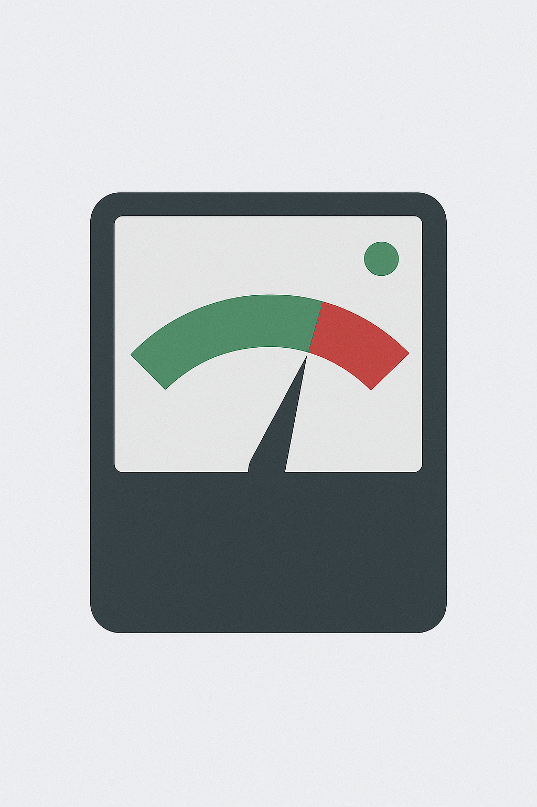

The Problem Everyone Ignores

Let's be honest. You bought a practice mute for one simple reason: to play more.
You wanted to practice at midnight, warm up backstage without getting "the look," or just run through scales in your thin-walled apartment without starting a war with your neighbors. You wanted freedom.
But what if I told you that the very tool you bought for freedom might be silently putting your progress in a cage? What if that mute, designed to solve one problem (noise), is secretly creating three new ones that are far more damaging to your playing?
The Hidden Truth
For years, we accepted that practice mutes were a necessary evil. We knew they felt stuffy. We knew our pitch felt "off." We knew the sound was buzzy and unsatisfying. But we figured it was a fair trade for silence.
It's not. It's a bad trade.
In the next ten minutes, you're going to discover the three "fatal flaws" of most common practice mutes, understand the science behind why they hinder your progress, and learn exactly what to look for in a mute that will actually make you a better musician.
The "Fatal Flaws"
Why Most Mutes Hurt Your Playing
Flaw #1: They Destroy Your Intonation
You're practicing the wrong notes.
This is the most dangerous flaw. When you put a poorly designed mute in your bell, it changes the acoustic properties of your instrument. Certain notes will suddenly become sharp, others flat.
You, being a dedicated musician, adjust your embouchure and slide position to "fix" it and play in tune with the mute. The problem? You are now training your muscle memory and your ear to play out of tune.
Then you go to a rehearsal or a performance, take the mute out, and play with those same "corrected" habits. Suddenly, you're the one who's out of tune, and you have no idea why.
Flaw #2: High Back-Pressure Ruins Your Embouchure

You know that feeling of stuffiness? Like you're blowing against a wall? That's back-pressure. It's the air that has nowhere to go, so it pushes back against you.
This does two terrible things:
- It causes physical tension, making you use more force than necessary
- It kills your endurance, making practice sessions shorter and less productive
A great practice mute should feel almost like you're playing on an open horn. The air should flow freely, allowing you to focus on your music, not on the physical struggle.
Flaw #3: Terrible Sound Quality
Most mutes produce a buzzy, thin, or distorted sound. It's a caricature of your real tone. While it might be quiet, it's also useless for detailed work.
If you can't hear your mistakes accurately, you can't fix them. Quiet practice is pointless if it's not also clear practice.
The Four Pillars of a Perfect Practice Mute
So, how do you find a mute that helps, not hurts? It comes down to four non-negotiable pillars. Any practice mute worth your money must deliver on all four.
Meaningful Acoustic Reduction
You need significant, measurable noise reduction. A professional-grade mute should offer at least a 40–50 dB reduction, turning the sound of a powerful trumpet into something as quiet as a normal conversation.
Absolute Intonation Accuracy
A perfect practice mute must not alter the pitch of your instrument. Period. This allows you to build correct muscle memory and ensures your practice time is always productive.
Zero Back-Pressure & Free Airflow
The ideal practice mute creates an open, free-blowing experience that feels nearly identical to playing without a mute, protecting your technique and building endurance naturally.
Crystal Clear Sound
The mute should act like a volume knob, not a distortion pedal. It should reduce the decibels but preserve the details, allowing you to self-correct and refine your playing with every note.
The Solution
Introducing Real Mute

For years, finding a mute that delivered on all four pillars felt impossible. You had to choose: do you want it to be quiet, or do you want it to be in tune?
You don't have to compromise anymore.
Revolutionary Technology
After years of acoustic research and development, we created Real Mute. It was engineered to be the first practice mute to deliver on all four pillars without sacrifice:
- A true 50 dB of noise reduction
- Perfect intonation — no pitch alterations
- An almost open-horn feel with zero back-pressure
- Preserves the clarity and character of your sound

Real Mute is the result of refusing to compromise. It's the practice tool we always wanted as musicians, and the one you deserve. Learn more about the design.
What Professionals Are Saying
I've tried every practice mute on the market. Real Mute is the first one that doesn't feel like I'm fighting my own horn. The intonation is spot-on, and the feel is incredibly open. It's a game-changer for hotel room warm-ups.
As a classical player, intonation is everything. I can finally practice long tones and articulation exercises late at night without developing bad habits. Real Mute preserves the core of my sound. I recommend it to all my students.
Pro-Tips for Your Real Mute
-
Trust Your Ears Again
Because Real Mute maintains true intonation and clarity, use it for more than just scales. Practice difficult passages, work on articulation, and listen for the subtle details in your sound. What you hear is what you're actually playing.
-
The "Warm-Up Anywhere" Advantage
Keep your Real Mute in your gig bag. Use it for a 10-minute backstage warm-up before a performance. The free-blowing nature means you can get your air moving and chops ready without fatigue, ensuring you walk on stage prepared.
-
Combine with a Tuner
For the ultimate intonation workout, practice with your Real Mute and a digital tuner. Since the mute doesn't alter the pitch, you can build rock-solid muscle memory and ear training that translates perfectly to unmuted playing.
Your Smart Buyer's Checklist
The Smart Buyer's Checklist
- Does it offer a specific, significant noise reduction (over 40–50 dB)?
- Does it guarantee it will not alter your instrument's intonation?
- Does it provide a free-blowing experience with minimal or zero back-pressure?
- Does it allow you to hear a clear, true representation of your tone?
- Is it designed to be durable and easy to use for daily practice?
- Does it come with professional testimonials and reviews?
- Is there a satisfaction guarantee or return policy?
You don't have to choose between playing well and playing quietly. If you're ready to experience what it feels like to practice without limits, to build correct habits, and to finally own a tool that helps instead of hinders, then you're ready for Real Mute.